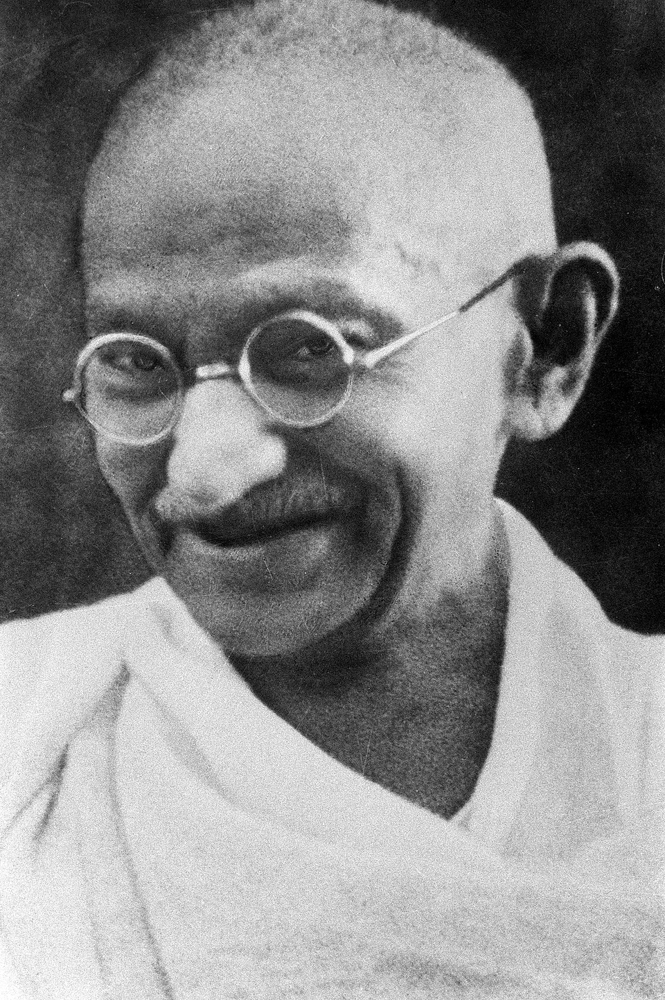
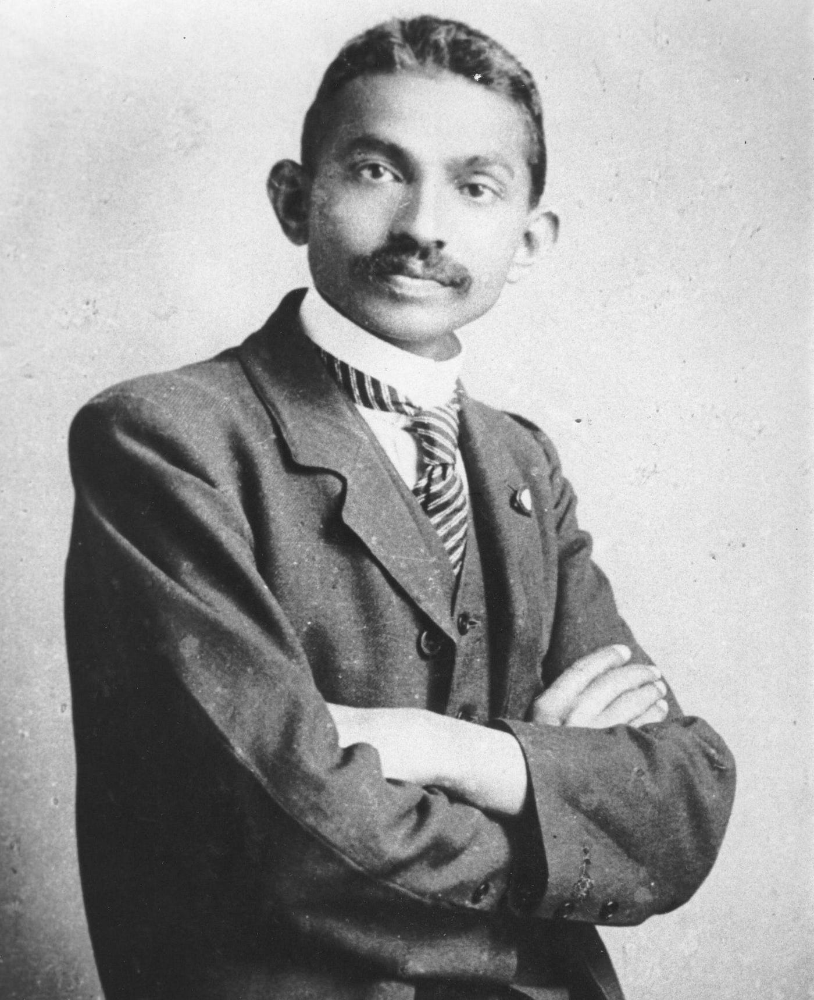
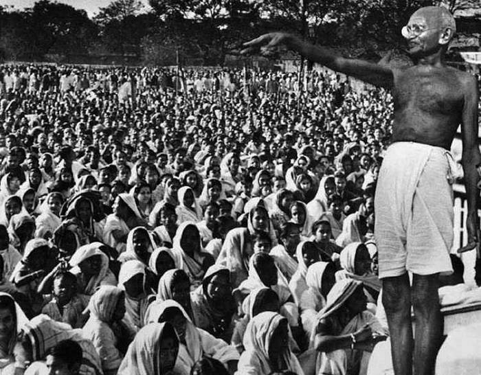
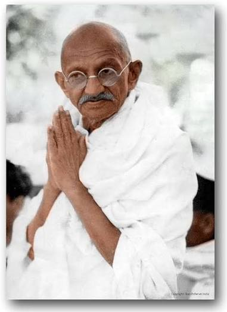
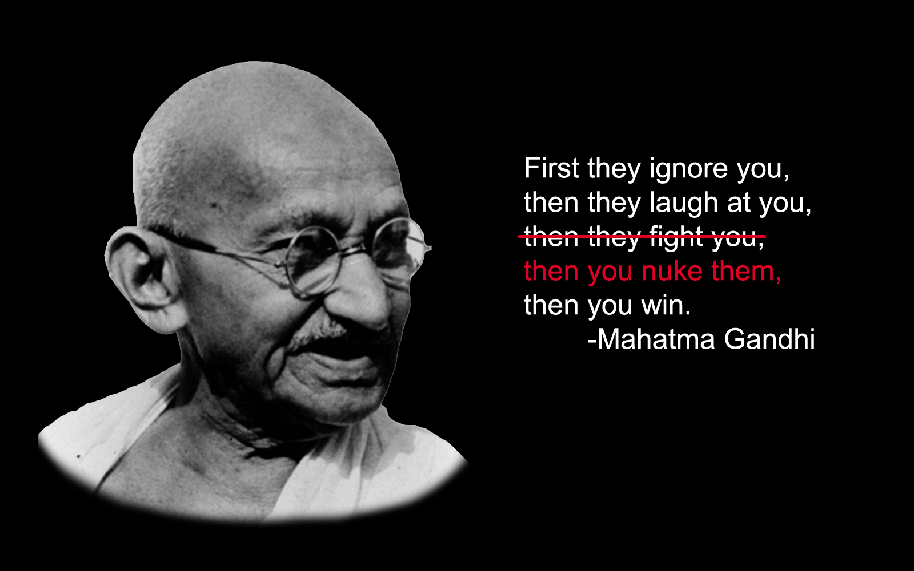
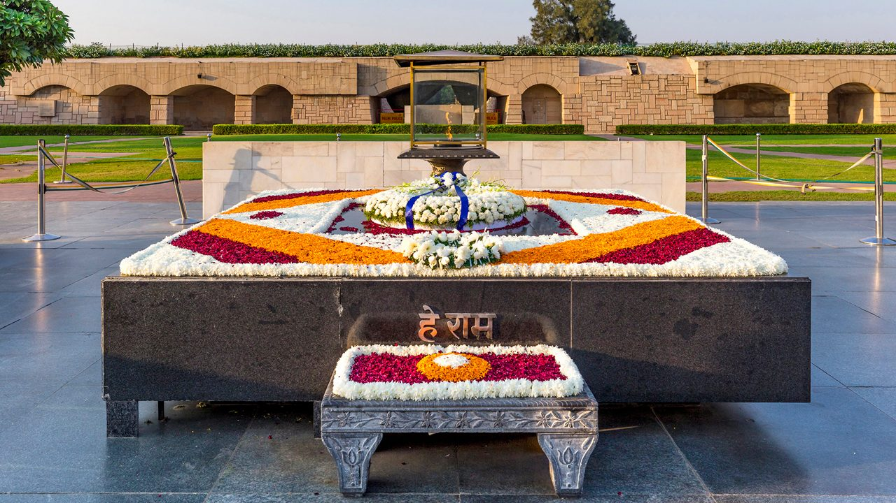

Mohandas Karamchand Gandhi was born on 2 October 1869. He led India's freedom struggle using the path of
truth and non-violence. People call him Bapu and Mahatma. He is known as the Father of the
Nation. His birthday, 2 October, is celebrated every year as Gandhi Jayanti in India. The United Nations
also observes it as the International Day of Non-Violence.
Birth and Childhood
Gandhi was born on 2 October 1869 in Porbandar, a coastal town in Gujarat. His father, Karamchand Gandhi, was
the Diwan (chief minister) of Porbandar. His mother, Putlibai, was a deeply religious woman who fasted often
and taught him honesty and kindness.
When Gandhi was a child, the family moved to Rajkot, where his father also served as Diwan. Gandhi was a shy
boy and was afraid of the dark. He was an average student, but he was very honest.
Two stories left a deep mark on him: the play about Shravana, who served his parents, and the play about King
Harishchandra, who never lied. Later he wrote that these stories shaped his love for truth.
Marriage and Family

In 1883, at the age of 13, Gandhi was married to Kasturba (Kasturbai Makhanji), who was also 13. This was a
child marriage, which was common at that time. Later in life, Gandhi spoke against child marriage.
His father died in 1885, and Gandhi always felt sad that he was not with him at that moment.
Gandhi and Kasturba had four sons: Harilal (born 1888), Manilal (1892), Ramdas (1897) and Devdas (1900).
Kasturba supported him in his struggles and went to jail several times. She died on 22 February 1944 while
in detention at the Aga Khan Palace, Pune.
Education

He studied in primary school in Porbandar and then in Rajkot.
He studied at Alfred High School, Rajkot, and passed the matriculation exam in 1887.
He joined Samaldas College in Bhavnagar but did not like it and left.
On 4 September 1888, he sailed to London to study law. Before leaving, he promised his mother that he
would not touch meat, alcohol or women.
In London he studied law at the Inner Temple. He became a vegetarian by choice and read the Bhagavad
Gita and the Bible.
He was called to the bar in June 1891 and returned to India.
His law practice in Bombay and Rajkot did not do well, because he was too shy to speak in court.
Years in South Africa (1893 - 1914)
In 1893, Gandhi went to South Africa for a one-year legal case of an Indian business firm. On 7 June 1893, he
was thrown out of a first-class train compartment at Pietermaritzburg station because of his skin colour,
even though he had a valid ticket. This event changed his life and made him fight racism.
In 1894 he started the Natal Indian Congress to fight for the rights of Indians. In 1904 he set up the
Phoenix Settlement near Durban, and in 1910 the Tolstoy Farm near Johannesburg.
In 1906, he started Satyagraha (holding on to truth) against a law that forced Indians to register and carry
passes. In 1913 he led a big march of workers in Transvaal against an unfair tax. In 1914 the government
agreed to many of his demands through the Indian Relief Act. After that, Gandhi returned to India on 9
January 1915.
Movements and Satyagrahas in India

After returning to India, Gandhi followed the advice of his political guru Gopal Krishna Gokhale and
travelled across the country for a year to understand people. Then he started his movements.
Year
Movement
Place
Details
1917
Champaran Satyagraha
Bihar
First Satyagraha in India. Farmers were forced to grow indigo by British planters. Gandhi, with
Rajendra Prasad and others, helped them win relief.
1918
Ahmedabad Mill Strike
Gujarat
Gandhi supported mill workers for better wages with Ambalal Sarabhai and Anasuya Sarabhai. He went
on a fast and the workers got a rise.
1918
Kheda Satyagraha
Gujarat
Farmers could not pay tax after crop failure. Gandhi and Sardar Vallabhbhai Patel led the protest
and tax was relaxed.
1919
Rowlatt Satyagraha
All India
Protest against the Rowlatt Act, which allowed arrest without trial. On 13 April 1919 the
Jallianwala Bagh massacre happened in Amritsar.
1919 - 1920
Khilafat Movement
All India
Gandhi joined hands with Muslim leaders like Muhammad Ali and Shaukat Ali to unite Hindus and
Muslims against the British.
1920 - 1922
Non-Cooperation Movement
All India
People left government jobs, schools, courts and foreign cloth. Khadi and the charkha became
symbols. On 5 February 1922, a mob burned a police station at Chauri Chaura, and Gandhi stopped the
movement because of violence.
1930
Salt March (Dandi March) and Civil Disobedience Movement
Sabarmati to Dandi, Gujarat
On 12 March 1930, Gandhi started from Sabarmati Ashram with 78 followers and walked about 240 miles.
On 6 April 1930, he made salt at Dandi to break the salt law. The Civil Disobedience Movement then
spread across India.
1931
Gandhi-Irwin Pact and Round Table Conference
Delhi and London
Gandhi signed a pact with Viceroy Lord Irwin and then went to London for the Second Round Table
Conference as the only Congress representative.
1932
Poona Pact
Pune
Gandhi fasted in Yerwada Jail against separate electorates for the oppressed classes. He signed the
Poona Pact with Dr. B. R. Ambedkar.
1933 onwards
Harijan Movement
All India
Gandhi worked against untouchability, travelled the country and started the weekly newspaper
Harijan.
1942
Quit India Movement
Bombay (Mumbai) and all India
On 8 August 1942, Gandhi gave the call "Do or Die" at Gowalia Tank Maidan. He and other leaders were
arrested the next day and kept in the Aga Khan Palace, Pune.
Political Career

1915: Returned to India and joined the freedom struggle. In 1917 he set up the Satyagraha Ashram at
Sabarmati, Ahmedabad.
1920: After the death of Bal Gangadhar Tilak, Gandhi became the main leader of the Indian National
Congress.
1924: He became the President of the Congress at the Belgaum session. This was the only time he held
this post.
1927: Congress boycotted the Simon Commission.
1929: At the Lahore session under Jawaharlal Nehru, Congress demanded Purna Swaraj (complete
independence). 26 January 1930 was celebrated as Independence Day.
He was jailed many times in India and South Africa, in total about 6 years in Indian jails.
Jawaharlal Nehru, Sardar Patel, Rajendra Prasad, Maulana Azad and Subhas Chandra Bose worked in the same
freedom struggle, though they sometimes differed with him on methods.
1946 - 1947: He walked through riot-hit Noakhali (now in Bangladesh) and Bihar to bring peace between
Hindus and Muslims.
15 August 1947: India became free. Gandhi did not join the celebration in Delhi. He was in Calcutta
(Kolkata), fasting and working for peace during the riots of Partition.
Other Important Events, Ideas and Books

Title Mahatma: People started calling him Mahatma (great soul). It is often said that
Rabindranath Tagore gave him this title.
Simple life: He wore a simple dhoti, travelled in third-class trains and spun yarn on the
charkha. He promoted khadi and swadeshi (use of Indian goods).
Ahimsa and Satyagraha: His main ideas were truth, non-violence and peaceful protest.
Books: He wrote Hind Swaraj (1909) and his autobiography My Experiments with Truth.
He edited newspapers like Indian Opinion, Young India and Harijan.
Fasting: He used fasting many times as a way of protest and for self-purification.
Sevagram Ashram: From 1936 he lived at Sevagram near Wardha, Maharashtra.
Nai Talim: He gave the idea of basic education that combines learning with handicraft work.
Recognition: He was named Time magazine's Man of the Year in 1930. He was nominated for the Nobel
Peace Prize several times but never received it.
Death

In January 1948, Gandhi fasted in Delhi to stop communal violence. On 30 January 1948, while he was going to
a prayer meeting at Birla House, Delhi, he was shot dead by Nathuram Godse. He was 78 years old. It is said
that his last words were "Hey Ram".
His last rites were performed on the banks of the river Yamuna, and his memorial Raj Ghat stands there today.
The whole world mourned his death, and 30 January is observed as Martyrs' Day in India.
Legacy
Gandhi's ideas of peace and non-violence inspired leaders like Martin Luther King Jr. and Nelson Mandela. He
is remembered as one of the greatest leaders in the history of the world.
.jpg)


.jpg)